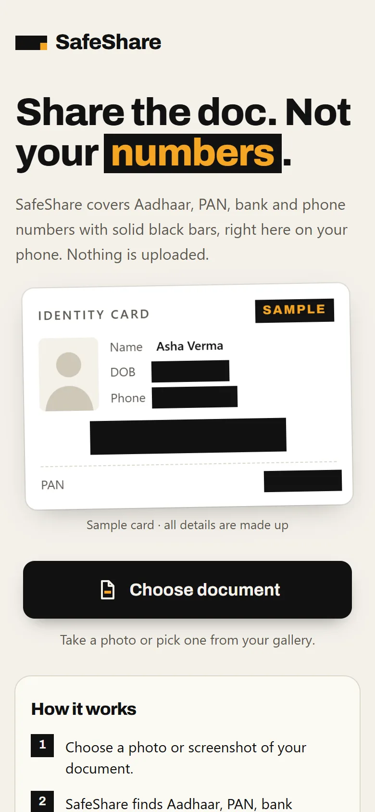
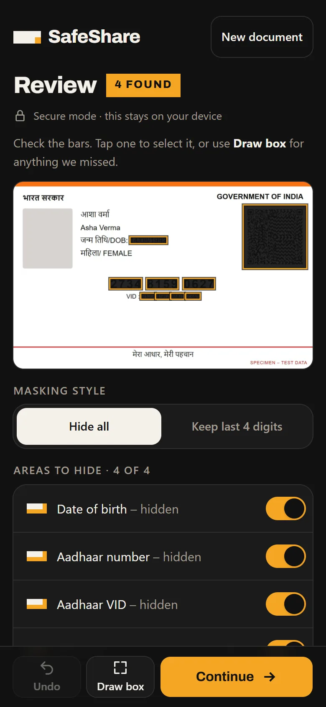
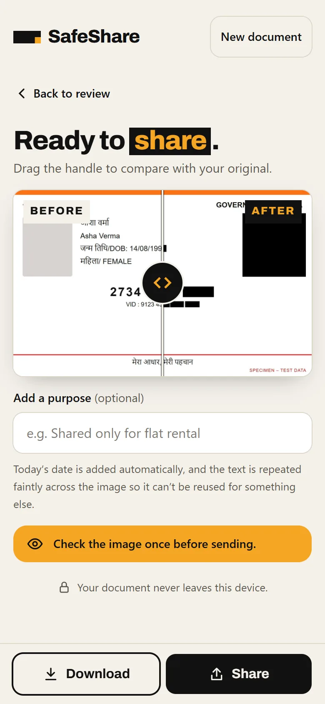

Hindi made this harder. When the OCR reads English and Hindi together, it sometimes misreads Latin labels. It once read "DOB" as "008". So every English keyword has a Hindi fallback (जन्म तिथि for date of birth), and Devanagari digits ०–९ are read as 0–9.
The problem
Everyone asks for a photo of your Aadhaar
In India, people send photos of their Aadhaar card, PAN card or bank passbook over WhatsApp all the time. A landlord wants proof of identity. An employer wants bank details for salary. A delivery agent wants an address.
LandlordsEmployersBanksDelivery agents
Each of those photos carries far more than the person needs to see: the full 12-digit Aadhaar number, date of birth, a QR code holding your name, address and photo, sometimes a full account number. And the photo doesn't stay in one chat. It gets forwarded, backed up and stored indefinitely.
I wanted the simplest possible fix: choose a photo, see the sensitive parts covered, share a clean copy.
The key decision
One rule: nothing leaves the phone
An app that asks you to upload your Aadhaar so it can hide your Aadhaar number defeats its own purpose. So before writing any feature, I set one rule: no server, no uploads, no exceptions. Every later decision was checked against it.
The browser enforces the rule, so it doesn't depend on me keeping a promise. A strict Content-Security-Policy (connect-src 'self') means the page cannot send a request to any other server, even by accident. The OCR engine, the English and Hindi language files and the font are all served from the app itself.
What I chose
- Text recognition running on the phone, in a web worker
- No analytics, no error reporting, no cookies, no accounts
- Solid black boxes, never blur (blur can sometimes be reversed)
- A brand-new JPEG for the output, so GPS and camera metadata from the original are dropped
- QR codes covered by position only; their contents are never read
What it cost
- On-device OCR is slower and less accurate than cloud OCR services
- About 4.8 MB to download on first visit, so it can work offline after
- No usage data, so I can't see where real users get stuck
- No crash reports from real phones
How it works
From photo to clean copy in about two seconds
Each test document took 1.1 to 2.3 seconds to read in a desktop browser. Phones are slower.
- Choose a photoCamera, gallery, drag-and-drop, or Share → SafeShare from the Android gallery
- Prepare a working copyRotated upright and capped at 2000 px so OCR stays fast
-
In parallel Read text + find QR codesTesseract.js (English + Hindi) and jsQR, each in its own web worker
- Run the detectorsRules check the words for Aadhaar, PAN, account numbers and more
- You review, then shareTurn boxes on or off, draw your own, then the bars are painted on the full-resolution original
Detection
Why rules instead of a model
Indian ID numbers have structure, and structure is easier to trust than a guess. An Aadhaar number has 12 digits, never starts with 0 or 1, and ends with a Verhoeff checksum digit, so a random 12-digit number usually fails the check. A PAN has a fixed letter-digit pattern where the fourth letter encodes the holder type. Rules like these are small, run offline, and each one can be tested on its own.
| Item | Rule |
|---|---|
| Aadhaar | 12 digits, first digit 2–9, valid Verhoeff checksum. Split groups like 2734 8159 0627 are joined first. |
| PAN | AAAAA9999A, 4th letter one of A B C F G H J L P T, printed in capitals |
| Bank account | 9–18 digits after "A/c", "Account" or "खाता" |
| IFSC | 4 letters, then 0, then 6 letters or digits |
| Phone | 10 digits starting 6–9, with optional +91 |
| QR code | Always covered. Aadhaar QR codes hold name, address and photo. |
Real documents are messy, so the rules had to be forgiving
OCR often confuses look-alike characters, so inside number-like words SafeShare reads O as 0, I or l as 1, S as 5 and B as 8. Context words like "A/c" must come before the number they label, so an Aadhaar number sitting near an account label doesn't get the wrong name.
Design
The Redaction Bar
The product does one thing: it puts a black bar over something private. I made that bar the whole visual identity. Three colours, one shape, used everywhere from the logo to the loading screen.
Ink#111111 · the bar
Paper#F4F1EA · the document
Marigold#F5A524 · the one accent



Built for cheap phones first
Every screen works at 360 px wide with no sideways scrolling. Buttons are at least 44 px tall and no text is smaller than 13 px.
Contrast rules written down
Marigold on paper only reaches 1.8:1, so it is never used for text on light backgrounds. Text on marigold is always black (9.3:1).
Motion that explains
A scan line sweeps the photo while it's read, and bars slide in one by one on review. Only transform and opacity animate, so it stays smooth on slow phones.
Respects reduced motion
With "reduce motion" turned on, every animation shows its final state instead.
Measuring it
I tested it like a product, not a demo
I built an evaluation script that runs 10 fake documents through the real app in headless Chrome and scores every result against an answer key. The first run found three real bugs.
Catch rate
97.1%100%
33 of 34 items, then 34 of 34
False alarms
31
Boxes on harmless text. The last one is kept on purpose (below).
Unit tests
94
Every detector, the review logic, mask geometry and export
Fixed
What went wrongMissed an Aadhaar number on the back of a card next to a large QR code.
Why, and the fixTesseract.js reads the page as one block of text by default, which skipped that line. Switching to automatic page layout found it, and cards read faster too (2.7 s → 1.3 s on one card).
Fixed
What went wrong"Laptop stand" on a harmless invoice was flagged as an IFSC code.
Why, and the fixThe look-alike fixes turned O into 0, making it match. PAN and IFSC now have to be printed in capitals, as they are on real documents.
Fixed
What went wrongA QR code that wasn't there, found in a dim photo.
Why, and the fixThe "QR code" was a long 3:1 rectangle. QR boxes must now be roughly square.
Kept
What it doesCovers the public helpline email printed on the back of the card.
Why I left itTelling public and personal emails apart isn't reliable. An extra box costs the user one tap. A missed number can't be taken back once it's sent.
These results come from synthetic documents with made-up data, and I developed the fixes against the same set. Real phone photos are harder. The next step is photographing printed fake documents in real lighting to get numbers that reflect everyday use.
Limitations and next steps
What it can't do yet
- Blurry or dark photos, handwriting and unusual layouts can cause misses. The app warns about blurry photos and asks you to check before sending.
- Names and addresses aren't detected automatically; you cover them with Draw box.
- No PDF support yet, and iPhones can't share directly into web apps.
- Next: test on real phones, read dates written with month names ("14 Aug 1992"), and add photos of printed fake documents to the test set.
What I learned
Lessons I'm taking forward
- Write the hardest rule down first."Nothing leaves the device" settled dozens of later choices before they came up, from fonts to error reporting.
- Measure before you fix.The evaluation found a missed Aadhaar number I would never have spotted by clicking around.
- Choose which mistake is cheaper.For privacy tools, an extra box is better than a missed number. Deciding that early made trade-offs easy.
- Be honest about the numbers.100% on synthetic data is a starting point, and the case study says so.
How I built it
I worked from a written set of project rules: the privacy rule, the design system, the contrast limits, and a requirement to measure before and after any change to detection. Every change was checked against the evaluation before it shipped.